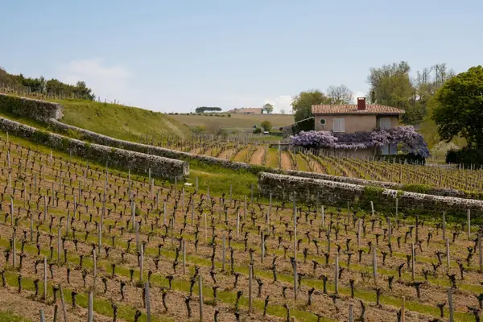

Muscadelle grape

Photo: Wojciech Rzepka on Unsplash
Muscadelle is a white grape known for honeysuckle, grape, citrus, floral. Its best-known homes are Bordeaux, Bergerac, Rutherglen.
Origin and history
A French white of the Gironde, unrelated to the Muscat family despite its grapey scent; DNA points to Gouais Blanc as one parent, making it a half-sibling of Chardonnay and Aligoté.
Where it grows
Bordeaux, where it is the minor third grape of Sauternes, Barsac and Entre-Deux-Mers blends, plus Bergerac and especially Monbazillac, and north-east Victoria in Australia, notably Rutherglen.
Structure
Soft and low in acidity with a silky, rounded texture, adding perfume rather than structure to blends; fortified Australian versions reach around 17 to 18 per cent alcohol.
Aromas, young and aged
Young: honeysuckle, acacia, grape juice and musky floral notes. Aged and fortified in Rutherglen: malt, toffee, treacle, cold tea and honey.
Ageing
Dry wines should be drunk young, but sweet Bordeaux blends age for decades and Rutherglen Topaque is aged for years in warm sheds before release.
Also known as
Tokay (formerly in Australia), Muscadet Doux, Raisinotte, Blanc Cadillac.
Good to know
Australia's sweet fortified 'Liqueur Tokay' was renamed Topaque after an agreement with the EU to protect Hungary's Tokaji, and the old name has been banned since 2020.
Wine regions for Muscadelle
Muscadelle wines to try
Real bottles from The Wine Library.
Château Lynch-Bages Blanc de Lynch-Bages
Bordeaux · Bordeaux Blanc · Sauvignon Blanc, Sémillon, Muscadelle
Rare white from Pauillac: citrus, exotic fruit and toasty oak.
Food: Turbot, chicken
Château Coutet Barsac Premier Cru Classé
Bordeaux · Barsac AOC · Sémillon, Sauvignon Blanc, Muscadelle
Botrytised Barsac with apricot, candied lemon and acacia honey, lifted by a fresh, almost citrusy finish.
Food: Foie gras, Roquefort
Appellations that use Muscadelle
- Sauternes AOC · Bordeaux · White, Sweet
Wine stories about Muscadelle
Similar white grapes
Explore all grapes in the interactive guide
The Wine Reference newsletter
New wines, stories and career guides, one email a week at most.
Over 18s only. Unsubscribe any time with one click. Your email is stored securely by Kit and never shared.
Support The Wine Reference
This guide is free, with no paywall. If it helped you choose a bottle, you can buy me a glass and keep it growing.
🍷 Buy me a glass